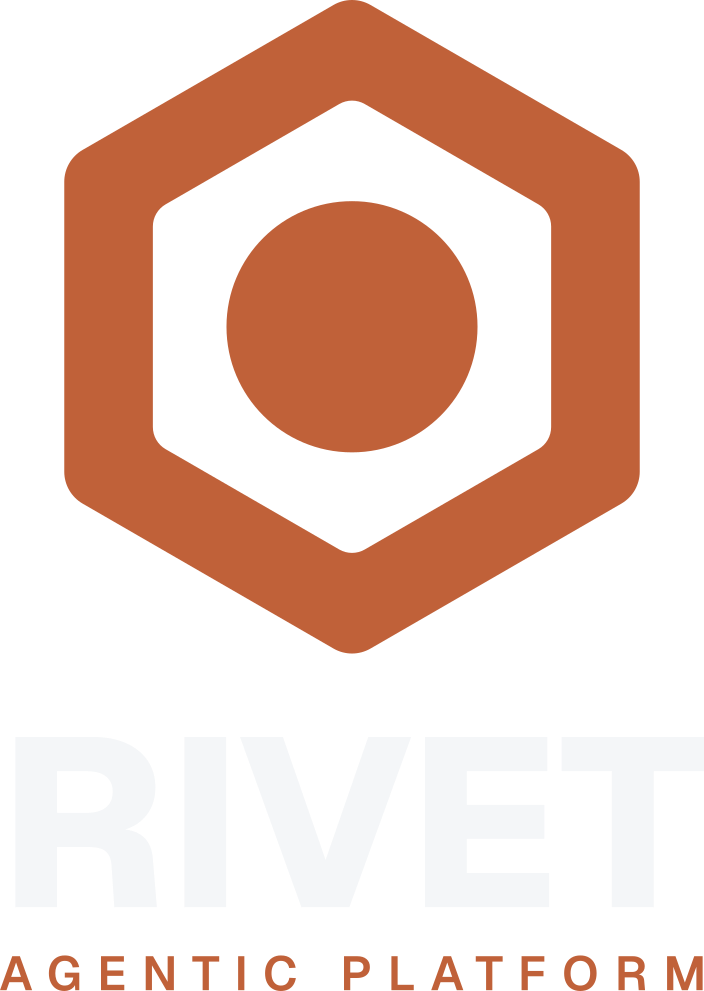
Rivet's identity, as built. The mark is generated:
make_mark.py is the source of truth and every SVG beside it is output.
Typography and the neutrals are family constants shared with Athena, Olympus,
Ignition, Tachyon, Trends, Lodestone and Reliquary; only the mark and
the accent are Rivet's own.
A thick-bordered hexagonal plate, a field, and the rivet at its
centre — the single-colour reduction of the splash artwork in
assets/shield-512.rgba.
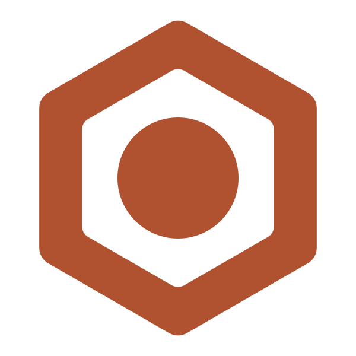
Designed on a 100-unit grid, emitted at 6×. Three subpaths read
under evenodd: the outer hexagon fills, the inner hexagon punches
the field, and the disc sits in the punched field as the rivet.
small_strk = 20 lands at 4.3% of the mark, against Athena's 479-unit owl at 4.17%.evenodd, and it is load-bearing. Under nonzero the field fills in and the mark becomes a solid slab with an invisible dot on it. Never normalise it against the wordmark's nonzero.verify_mark.py samples 3 subpaths × 3000 points against the intended
construction. Maximum boundary deviation 0.000042 design units — 0.0001% of
the mark's width, which is 0.0000 px at a 512 px tile. Enclosed area 312 373.1
against an analytic 312 373.3 (0.0001%). The small variant scores identically.
Hand-rolled arc maths produces plausible-looking but wrong shapes when a sweep
flag is wrong, and the error is invisible at any size a human reviews at.assets/shield-512.rgba is two-tone — steel body, oxide rivet — and is
drawn by cmd/rivet-splash and cmd/rivet-launcher. It cannot be the
brand mark: build-brand.py recolours one fill and would flatten the
second colour. This is the same constraint that stopped Ignition's
charcoal-hexagon-plus-gradient-flame concept being taken as-is. The two are
relatives, not versions of each other; changing one does not oblige a change to
the other.Two lockups, each in a light and a dark variant. The wordmark is
Geist 800 and the descriptor Geist 600, both baked to outlines — no shipped
asset contains a <text> element or a font-family, so nothing depends
on an installed font.
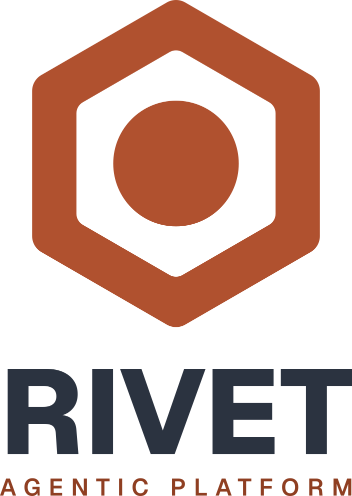
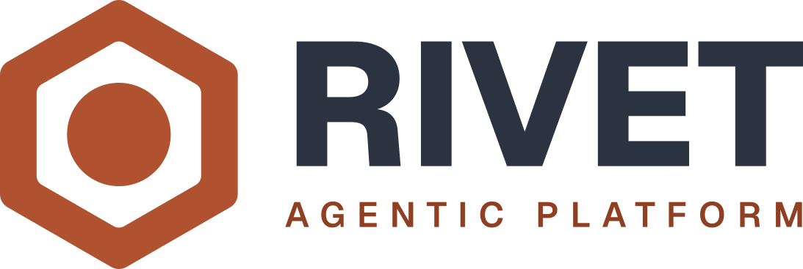
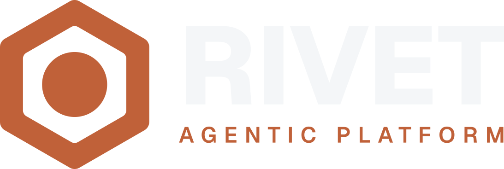
| Quantity | Value | Notes |
|---|---|---|
| mark ink | 467.7 × 530.7 | aspect 0.8812 |
| measure W | 708.1 | derived from the wordmark's natural width — wordmark_width is deliberately omitted; only Athena pins it, for legacy letter-spacing |
| cap height | 170.2 | 0.1702 × W — the family constant. Cap height is what is held across projects, never lockup width; forcing a fixed measure squeezed OLYMPUS by −0.11em |
| descriptor | 47.94 @ 0.326em | tracking solved inside the 0.08–0.45em band to lock the descriptor's width to the wordmark's |
| placement | by measured ink | never by advance width — side bearings mean a wordmark set to width W is not centred on W/2 |
Five tiles at 1024². The -light / -dark suffix names
the chrome the icon sits on, not the tile colour —
appicon-light.svg is the dark tile, because that is what pops against a
light taskbar.
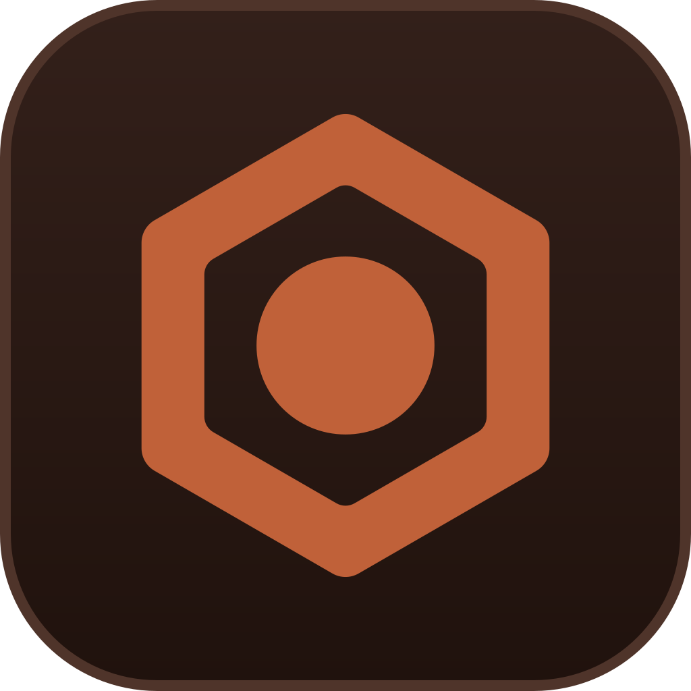
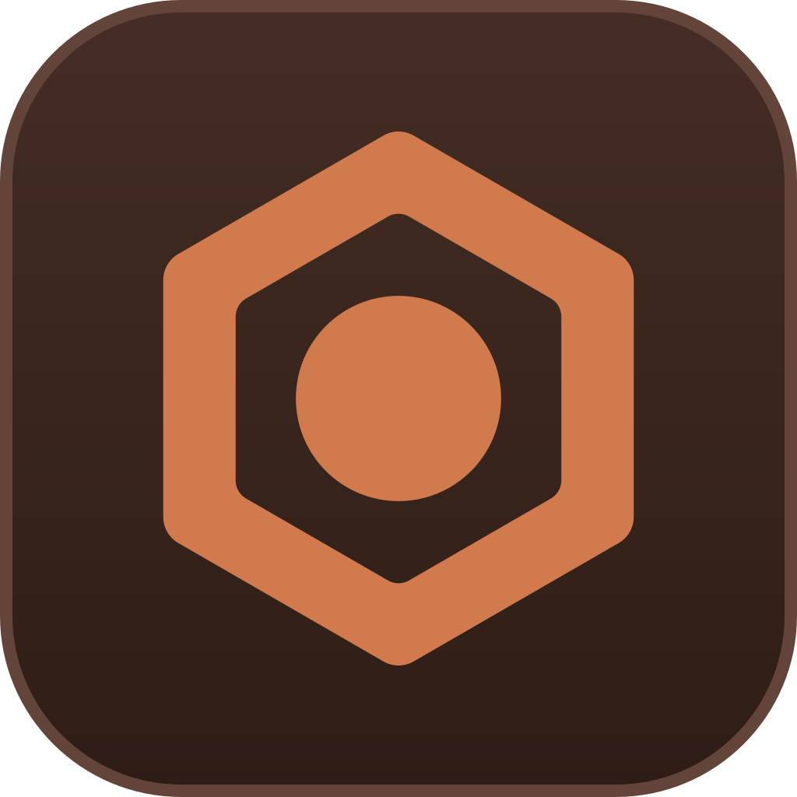
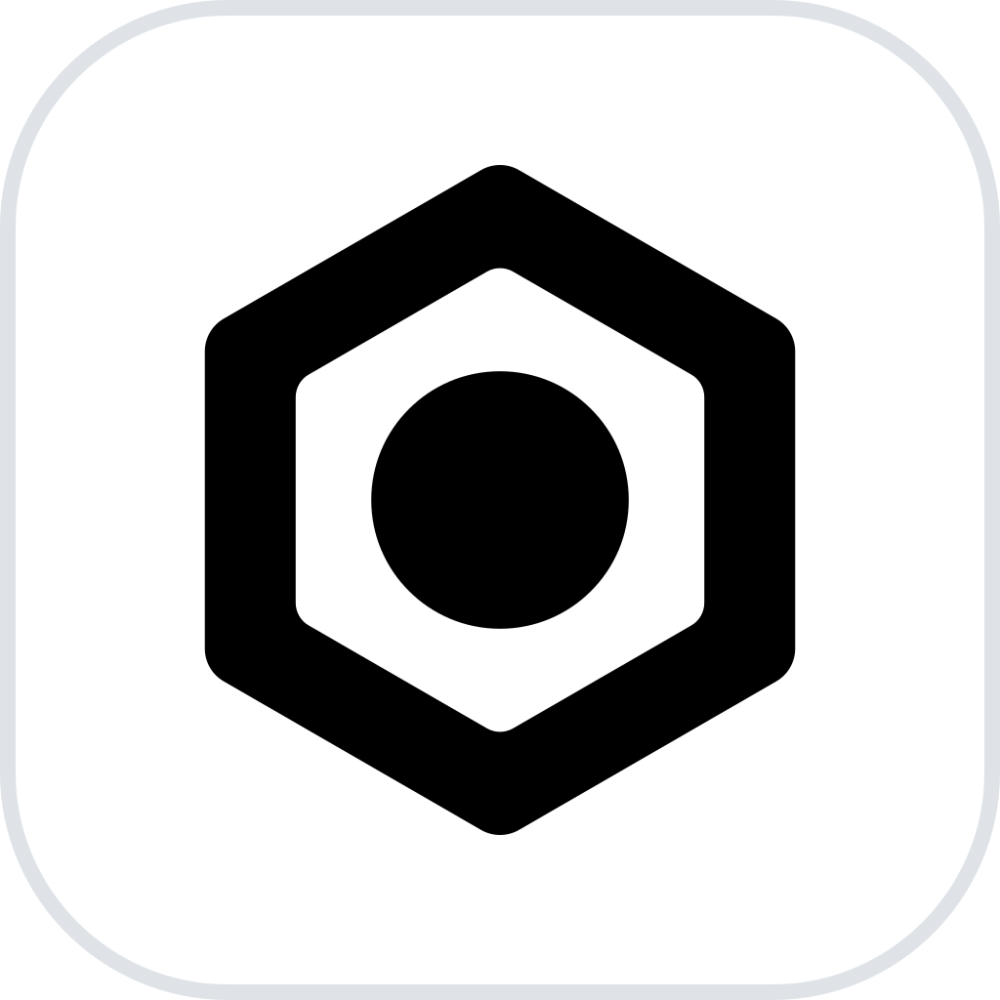
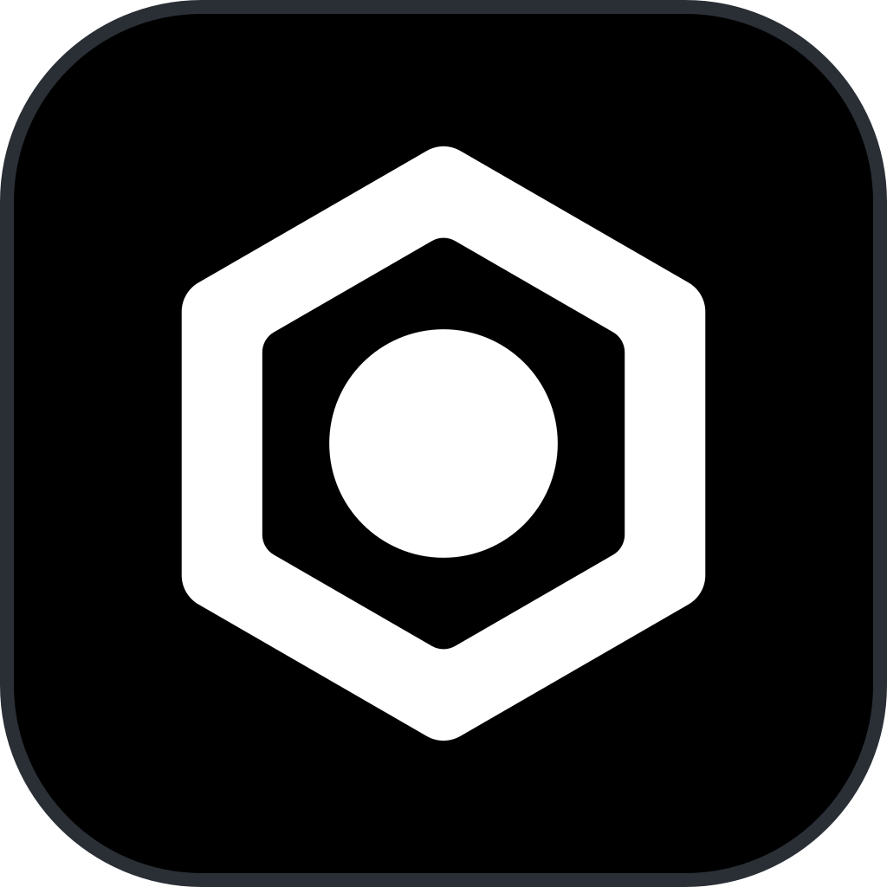
appicon-small.svg is a white mark on a flat, full-bleed
#20120D tile at 88% fill, emboldened by small_strk. It is the single
source for .ico, .icns and every OS surface — those cannot switch on
theme, and the opaque tile is exactly what makes one file work on both a light
and a dark taskbar.
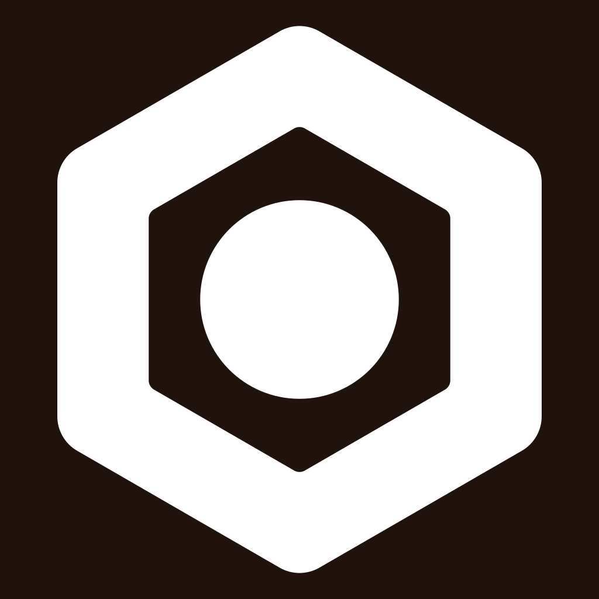
before .+##+######+##+. field gone — border welded to rivet after .+##.+####+.##+. field survives as a full dark pixel
small_strk fattens every edge at once, so the field closes from both
sides. The fix was the opposite of the instinct: give weight back — border 12,
rivet r 15 — so the field starts wider. It now measures 11.97 units before
embolden and 8.64 after, or 1.35 px at 16 px. Re-check by rasterising, never
by eye in a preview pane, if these are ever touched.Geist, variable, SIL OFL 1.1 — the family typeface, shared with every sibling project. The identity face does not change per project; that is what makes the projects read as one system.
RIVET, baked to outlines.APPLIANCE OS, tracked out to lock its width to the wordmark's.OFL.txt sits beside Geist-var.ttf in this folder and must travel with it. The SIL OFL requires it, and it is an explicit acceptance criterion of Athena's adoption ticket 39ac7a — every adoption up to and including Trends missed it.<text> element renders differently on every machine and is a defect,
not a convenience.Rivet's colour is #B0512F — weathered oxide. Everything else below is either a role twin of it or a family constant.
#B0512F is light-biased: it holds comfortably on white and paper
and dims on black. Left as the single accent it would put the family's weakest
dark reading on the dark lockup's descriptor — which is small text, not a
graphic. So accent carries a small lift and accent_on_light holds the
ruled colour. This is the Olympus mechanism inverted: there the accent vanished
on white (the retired #7BEEFF read ~1.35:1), here it dims on black.
| Colour | white | paper #F4F6F8 | dark chrome #111 | tile |
|---|---|---|---|---|
| #B0512F ruled | 5.17 | 4.77 | 3.65 | 3.52 |
| #C06139 accent | — | — | 4.51 | 4.34 |
| #D07A4E bright | — | — | — | 5.04 on #2E1D16 |
| #8F3F22 deep | 7.24 | 6.68 | — | — |
| #FFFFFF on tile_small | — | — | — | 18.20 |
Every figure from check_color.py.
Tile column is #20120D unless stated.
Warm oxide rather than Ignition's neutral slate, and dark on
purpose: a warm charcoal #332E2C was tried first and read 2.59:1
against the mark — a failure of 3:1 outright, not a near miss.
tile_light_chrome — the dark tile, edge #4F342A.tile_dark_chrome — the lifted tile, edge #63443A.tile_small — flat, full-bleed, behind the white mark.| Project | Accent | Hue | Separation from Rivet |
|---|---|---|---|
| Rivet | #B0512F | 15.8° | — |
| Ignition | #EF7C1A | 27.6° | 11.8° — closest |
| Athena | #C49A58 | 36.7° | 20.9° |
| Reliquary | #BF40AA | 309.9° | 65.9° |
| Lodestone | #4F8A1F | 93.1° | 77.3° |
| Tachyon | #7C5CFF | 251.8° | 124.0° |
| Trends | #158A66 | 161.5° | 145.7° |
| Olympus | #1F9FC4 | 193.5° | 177.6° |
Sibling values read from each project's own
brand.json; a sibling with a monochrome identity holds no hue and
cannot be collided with.
check_color.py's 12° flag by 0.2 of a degree. The numbers were put to the
maintainer before the colour was chosen and he ruled it: he did not care about
crowding Ignition's color, because the two projects will live side by side
(.rulings/ R-294).
brand.json's _comment, and in ADR-037, so that nobody re-opens it as an
oversight. The supporting argument is the one the family already accepts for
Ignition and Athena, which sit 9.1° apart and coexist: hue separation alone is
not the test.
| Hue | Lightness | Saturation | |
|---|---|---|---|
| Rivet | 15.8° | 43.7% | 57.8% |
| Ignition | 27.6° | 52.0% | 86.9% |
cmd/rivet-fleet/src/tui/theme.rs makes down() and error()
Color::Red, and cmd/rivet-provision/src/field.rs carries a ruling built
on "red at write time is a rejection, red already on the screen is a state you
can see and fix." Those are semantic colours and must not be reassigned to
decoration.
Color::Red mostly by saturation, and a terminal
palette is not under this project's control. Unverified: whether the fleet
TUI's fault state remains unmistakable beside brand chrome, on a real terminal, at
a real size. If it fails, move the semantic colour, not the accent.Already done — this folder is docs/brand/. It regenerates
standalone: make_mark.py, verify_mark.py, build-brand.py,
Geist-var.ttf and OFL.txt are all vendored here.
build-brand.py looks for the font beside itself first.
# regenerate everything, in order, from docs/brand/
uv run python make_mark.py
uv run --with svgelements python verify_mark.py
uv run --with uharfbuzz --with fonttools --with svgelements \
python build-brand.py ./brand.json
Deterministic — same inputs give byte-identical output, so it is safe to run in CI as a drift check.
<!-- README.md header, theme-aware -->
<p align="center">
<picture>
<source media="(prefers-color-scheme: dark)" srcset="docs/brand/logo-h-dark.svg">
<img src="docs/brand/logo-h-light.svg" alt="Rivet — appliance os" width="420">
</picture>
</p>
# favicons and launcher icons — appicon-small.svg is the single source
magick -background none docs/brand/appicon-small.svg -resize 32x32 favicon-32.png
magick docs/brand/appicon-small.svg -define icon:auto-resize=32,24,16 favicon.ico
magick -background none docs/brand/appicon-light.svg -resize 512x512 icon-512.png
assets/shield-512.rgba
remains the two-tone shield. Whether Rivet's boot screen should show the
hexagon instead is an open question, not a decision this document makes — and
it would be a change to a 1 MiB raw asset shared by two programs.check_color.py's FAMILY dict. A project missing from that dict
cannot be collided with — the omission has already produced one wrong answer
(Reliquary) and one six-day gap for another sibling. Rivet's accent was ruled 2026-09-01;
the table entry is owed the same day.